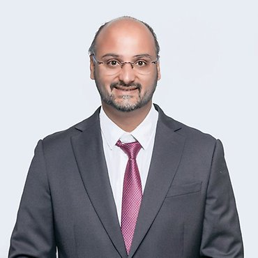
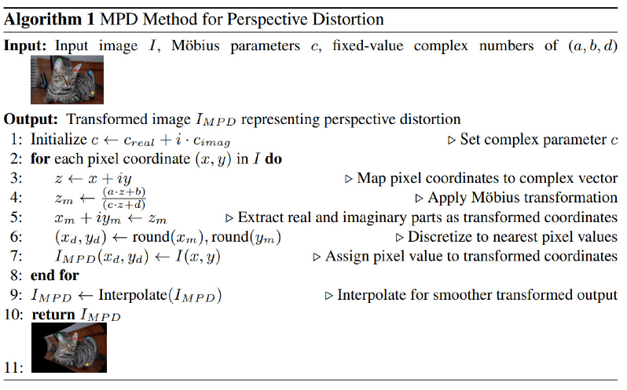
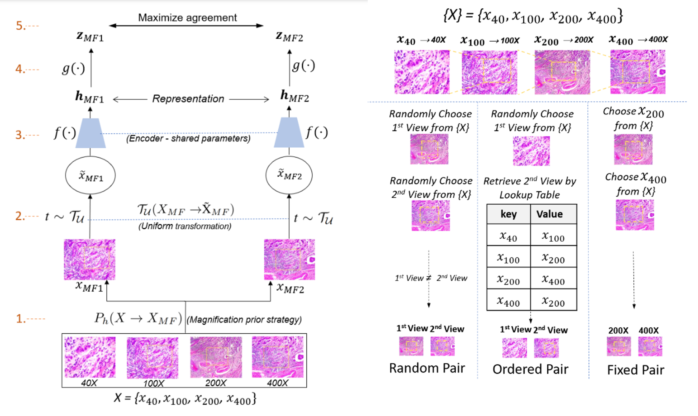

|
Prakash Chandra Chhipa
Currently, Prakash Chandra Chhipa is a Computer Vision Researcher, Ph.D. Candidate at Machine Learning Group at Luleå University of Technology, Sweden, advised by Prof. Marcus Liwicki. . Previously, He has worked on applied research and development in machine learning for more than 8 years in research and developement primarily in computer vision in multiple international organizations.
Email /
Google Scholar /
Github /
LinkedIn /
CV
|

|
|
Research
Prakash's research interest is in reducing the human supervision in learning phenomena. Specifically focusing on self-supervised representation learning in computer vision for their efficient adatations on beyond the natural visual concepts domain and making them robust against distribution shifts.
|
|

|
Möbius Transform for Mitigating Perspective Distortions in Representation Learning
Prakash Chandra Chhipa,
Meenakshi Subhash Chippa,
Kanjar De,
Rajkumar Saini,
Marcus Liwicki,
Mubarak Shah
(Arxiv) , 2024
The proposed MPD method models real-world distortions by applying a family of Möbius transforms on existing data without estimating camera parameters or relying on actual distorted data. We develop a perspectively-distorted ImageNet-PD dataset to benchmark the robustness of the deep learning models and reveal that existing models lack robustness. Further, MPD-incorporated models improve performance on existing benchmarks ImageNet-E and ImageNet-X and significantly enhance results on the ImageNet-PD dataset while maintaining consistent performance on standard data. Also, MPD incorporated in practical applications such as crowd counting, fisheye image recognition, and person re-identification improved performance.
|
|

|
Magnification prior: a self-supervised method for learning representations on breast cancer histopathological images
Prakash Chandra Chhipa,
Richa Upadhyay,
Gustav Grund Philigren,
Rajkumar Saini,
Seiichi Uchida,
Marcus Liwicki
Proceedings of the IEEE/CVF Winter Conference on Applications of Computer Vision (WACV), 2023
MPCS method enables self-supervised pretraining for comparatively small-scale breast cancer microscopic image dataset BreakHis [52] for efficient representation learning by exploiting supervision signals from data. Results on three public datasets have confirmed the excellence of the MPCS method.
|
Feel free to steal this website's source code. Do not scrape the HTML from this page itself, as it includes analytics tags that you do not want on your own website — use the github code instead. Also, consider using Leonid Keselman's Jekyll fork of this page.
|
|
{kind=link}